Table of contents |
Author: Johannes Buchner Homepage: http://astrost.at/istics/ Further information: X-ray survey’s spectral analysisAbstract: X-ray surveys are a fundamental tool for characterising the AGN population. They simultaneously provide accretion luminosities and line-of-sight column densities, but more importantly a well-understood selection function. After detecting X-ray sources crucial steps include 1) finding multi-wavelength counterparts, 2) constraining redshifts (spec-z/photo-z/XZ) and 3) X-ray spectral analysis; each step however has pitfalls. In this talk I will focus on characterising the X-ray spectra in the low/high-count, low/high-z and Compton-thin/thick regimes with spectral models of realistic complexity. Care has to be taken with choosing the right methods, including: fitting statistic, background handling, redshift uncertainty propagation, parameter space exploration methods and model comparison technique. Finally, I discuss how to rigorously infer population distributions from a limited, biased sample with uncertain properties using hierarchical Bayesian inference.  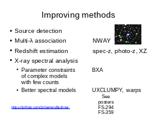
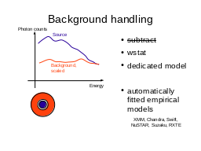
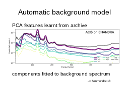
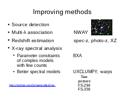
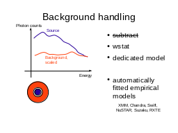
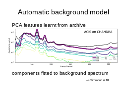
 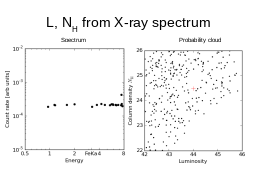
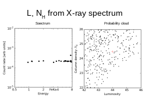


 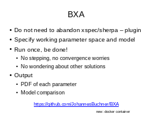
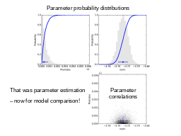
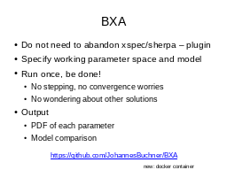
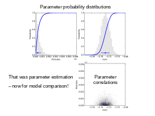

 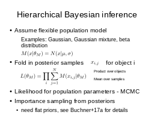
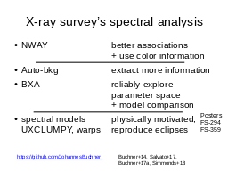
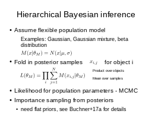
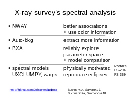
|